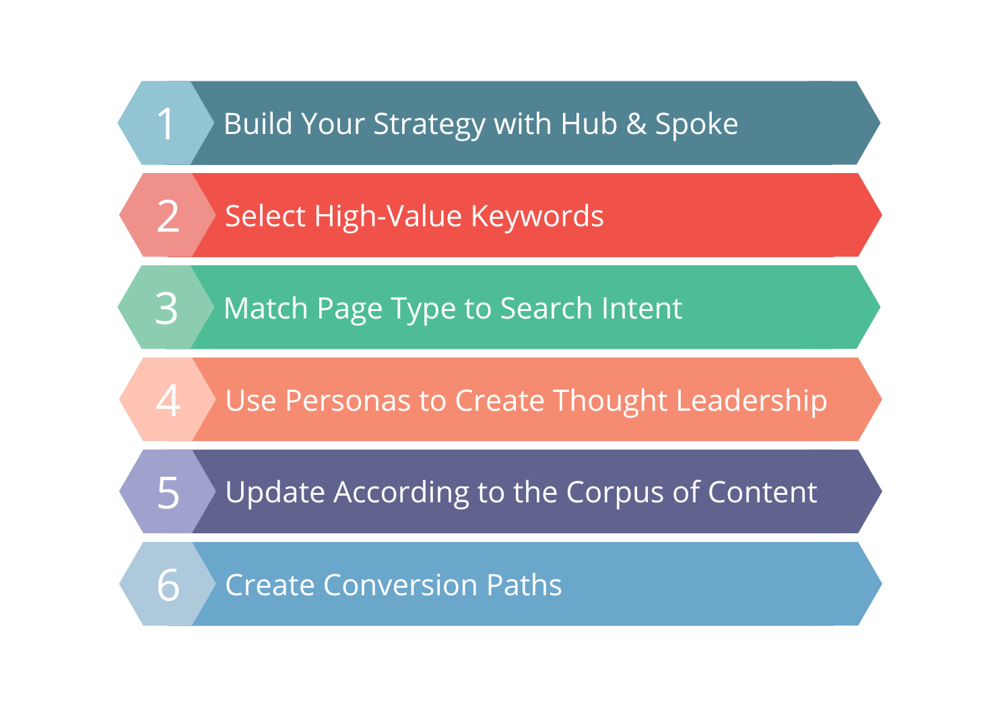

前言：作为拥有9年谷歌SEO实战经验的独立站创业者，我见证了无数网站通过优质的SEO文章从零流量突破到月访问量百万。本文将毫无保留地分享我在SEO博客写作方面的实战经验，帮助您掌握高效的SEO文章写作方法，同时避开常见的写作误区。

SEO内容写作的核心策略框架
1. 为什么SEO要写博客文章？
许多独立站卖家问我："为什么不能只靠产品页面获得谷歌流量，还要花费大量时间写博客文章？" 答案其实很简单——博客文章是获取流量、建立信任、展示专业度的最有效方式。
1.1 为了精准的用户画像而写
SEO小平将SEO博客划分为两大类：
- 第一大类：为了流量 - 针对有搜索量的关键词
- 第二大类：为了转化 - 针对没有流量但高转化的关键词
为了流量的文章：我们使用Semrush等工具调研有流量的关键词，创作能够获得搜索引擎排名的内容。这类文章的目标是吸引陌生访客，扩大品牌知名度。
为了转化的文章：围绕一线客户反馈的信息去写内容，解答客户在决策过程中的疑虑。这类文章虽然搜索量不大，但能够显著提高转化率。
💡 实战案例
我曾为一家B2B机械设备公司写过一篇《如何选择合适的工业清洗设备》的文章。虽然这个关键词月搜索量只有100+，但这篇文章带来的客户询盘转化率达到了15%，远超行业平均水平。
1.2 从搜索引擎算法角度来看

博客内容策略的完整流程
通过写作博客能够增加网站的行业相关性，这对SEO排名至关重要：
- 正向索引优化：通过大量相关内容，让搜索引擎清晰知道我们是做什么行业的
- 倒排索引原理：搜索引擎通过关键词分布和语义分析，建立网站主题权威性
- 知识图谱构建：配合搜索引擎从关键词分词到语义理解，形成完整的行业知识图谱
💡 SEO小平提醒
单纯的产品页面往往缺乏足够的内容深度和广度，难以在竞争激烈的关键词上获得排名。而博客文章可以提供丰富的上下文信息，帮助搜索引擎更好地理解网站主题。
1.3 赢得客户信任，彰显行业经验
我们这些有资深行业经验的人，深知询盘客户需要什么信息。通过博客文章，我们可以：
- 展示专业知识和行业洞察
- 解答客户常见问题和疑虑
- 分享成功案例和实战经验
- 建立品牌权威性和可信度
2. 怎么写SEO博客文章？

高效博客写作的9个关键步骤
2.1 关键词研究与主题规划
好的SEO文章始于精准的关键词研究。以下是我的关键词研究流程：
第1步：核心关键词确定
使用Semrush、Ahrefs等工具，找出与业务相关的核心关键词。重点关注：
- 搜索量适中（月搜索量100-10000）
- 竞争难度可控（KD<50）
- 商业意图明确
第2步：长尾关键词挖掘
围绕核心关键词，挖掘相关的长尾关键词：
- 问题类关键词（how to, what is, why）
- 比较类关键词（vs, compared to, alternative）
- 地域类关键词（in China, for Chinese market）
第3步：搜索意图分析
分析用户搜索这个关键词的真实意图：
- 信息性搜索：寻找知识和信息
- 导航性搜索：寻找特定网站或品牌
- 商业性搜索：比较产品或服务
- 交易性搜索：准备购买决策
2.2 内容结构与写作技巧
优秀SEO文章的标准结构：
📝 引人注目的标题
- 包含核心关键词
- 字数控制在50-60字符
- 具有吸引力和点击欲望
- 符合用户搜索习惯
📖 清晰的开篇介绍
- 开门见山，直接回答用户问题
- 包含核心关键词
- 预告文章主要内容
- 控制在150-200字
🗂️ 详细的目录结构
- 使用H2、H3标签构建层次
- 每个小节都有明确的主题
- 便于用户快速定位信息
- 有利于搜索引擎理解内容结构
💡 丰富的内容形式
- 文字说明 + 图片配图
- 实战案例 + 数据支撑
- 步骤指南 + 工具推荐
- 总结要点 + 行动建议
2.3 内容深度与用户价值
谷歌越来越重视内容的深度和用户价值。以下是我总结的内容质量标准：
✅ SEO内容质量检查清单
内容深度
- □ 覆盖主题的各个方面
- □ 提供独特的观点和见解
- □ 包含实际案例和数据
用户价值
- □ 解决用户实际问题
- □ 提供可操作的建议
- □ 内容准确且时效性强
- □ 语言通俗易懂
SEO技术要求
- □ 关键词密度1-3%
- □ 使用相关LSI关键词
- □ 内链建设合理
- □ 图片包含Alt标签
3. 看似努力，实则有害的SEO博客写作方法
⚠️ 常见的SEO写作误区
许多人在SEO写作上投入了大量时间和精力，但效果甚微，甚至适得其反。以下是我总结的最常见的有害写作方法：
3.1 关键词堆砌陷阱
❌ 错误示例
"SEO优化是最好的SEO优化方法，我们的SEO优化服务提供专业的SEO优化策略，帮助您的网站获得最佳的SEO优化效果，我们的SEO优化团队有丰富的SEO优化经验..."
✅ 正确示例
"搜索引擎优化(SEO)是提升网站自然排名的有效策略。我们的专业团队通过关键词研究、内容优化和技术改进，帮助客户网站在谷歌搜索中获得更好的可见度和流量转化。"
为什么关键词堆砌有害？
- 谷歌算法能够识别并惩罚关键词堆砌
- 严重影响用户阅读体验
- 降低内容的专业性和可信度
- 可能导致网站被搜索引擎降权
3.2 内容深度不足
许多人认为只要文章字数够长就能获得好排名，实际上内容深度比字数更重要：
| 浅层内容 | 深度内容 |
|---|---|
| 泛泛而谈，缺乏细节 | 深入分析，提供具体方法 |
| 重复网上已有内容 | 分享独特见解和经验 |
| 理论为主，缺乏实践 | 结合案例，提供实操指导 |
| 信息过时或不准确 | 信息及时更新，数据准确 |
3.3 忽视用户意图
用户搜索"如何选择CRM系统"的真实意图分析：
❌ 错误理解
认为用户想了解CRM系统的定义和功能，于是写了一篇介绍CRM基础概念的文章。
✅ 正确理解
用户已经了解CRM是什么，他们需要的是选择标准、比较方法、实施建议等实用信息。
3.4 缺乏内链策略
许多人写完文章就发布，不考虑与网站其他内容的关联。正确的内链策略应该：
- 相关性链接：链接到相关主题的文章
- 权重传递：从高权重页面链接到新文章
- 用户引导：引导用户深入了解相关话题
- 网站结构：构建清晰的信息架构
3.5 图片SEO优化不当
SEO内容优化的最佳实践方法
图片是SEO文章的重要组成部分，但许多人在图片优化上存在问题：
图片SEO优化要点：
- 文件名优化：使用描述性的文件名，包含关键词
- Alt标签：为每张图片添加准确的Alt描述
- 图片压缩：优化文件大小，提升加载速度
- 尺寸适配：使用响应式设计，适配不同设备
- 结构化数据：为重要图片添加结构化标记
4. AI时代的SEO写作策略
随着ChatGPT、Claude等AI工具的普及，SEO写作面临新的机遇和挑战。作为实战派SEO专家，我认为AI时代的SEO写作需要重新思考策略。
4.1 AI工具的正确使用方式
✅ 推荐使用方式
- 思路启发：让AI帮助头脑风暴，提供写作思路
- 大纲制作：使用AI生成文章结构和目录
- 初稿辅助：AI生成初稿后，人工深度修改
- 语言润色：优化表达方式和语言流畅度
- 数据研究：帮助整理和分析相关数据
❌ 避免的做法
- 完全依赖：直接发布AI生成的内容
- 缺乏验证：不检查AI提供信息的准确性
- 千篇一律：使用相同的AI提示词生成内容
- 忽视个性：缺乏个人观点和独特见解
- 批量生产：大量生成低质量AI内容
4.2 人工智能无法替代的价值
尽管AI工具很强大，但以下方面仍需要人的参与：
- 实战经验：AI无法提供真实的行业实践经验
- 情感共鸣：人性化的表达更能引起读者共鸣
- 创新思维：独特的观点和创新性见解
- 时效性：对最新行业动态的敏感度
- 品牌个性：符合品牌调性的内容风格
4.3 为AI搜索优化内容
随着谷歌SGE（Search Generative Experience）和其他AI搜索功能的推出，我们需要调整SEO策略：
AI时代SEO优化要点：
1. 结构化内容呈现
- 使用清晰的标题层次（H1-H6）
- 采用问答格式组织内容
- 添加详细的FAQ部分
- 使用列表和表格整理信息
2. 权威性信号强化
- 引用可靠的数据源和研究
- 展示作者专业背景
- 获得行业专家认可
- 建立品牌权威性
3. 实体和关系优化
- 明确提及相关实体（人、地点、组织）
- 建立主题之间的关联关系
- 使用语义相关的词汇
- 构建完整的知识图谱
5. 实战技巧与工具推荐
5.1 我的SEO写作工作流
关键词研究
使用Semrush分析关键词难度和搜索意图，选择合适的目标关键词。
竞争对手分析
分析排名前10的竞争对手内容，找出内容空白和改进机会。
内容大纲制作
制定详细的文章大纲，确保覆盖用户所有关心的问题。
内容创作
基于大纲进行创作，融入个人经验和独特见解。
SEO优化
优化标题、Meta描述、内链、图片Alt等SEO元素。
质量检查
检查语法、事实准确性、用户体验等各个方面。
5.2 必备工具推荐
🔍 关键词研究工具
- Semrush：综合性SEO工具，关键词难度分析精准
- Ahrefs：强大的反向链接和关键词数据库
- Google Keyword Planner：免费的谷歌官方工具
- Answer The Public：发现相关问题和长尾词
✍️ 内容创作工具
- ChatGPT/Claude：AI写作助手，思路启发
- Grammarly：语法检查和表达优化
- Hemingway Editor：提高文章可读性
- Canva：制作配图和信息图表
📊 SEO分析工具
- Google Search Console：监控搜索表现
- Screaming Frog：网站技术SEO分析
- PageSpeed Insights：页面速度优化
- Yoast SEO：WordPress SEO插件
📈 效果监测工具
- Google Analytics：流量和用户行为分析
- Hotjar：用户热图和录屏分析
- Rank Tracker：关键词排名监控
- Search Console：搜索查询和点击数据
5.3 内容发布与推广策略
好内容创作完成后，还需要有效的发布和推广策略：
📋 内容推广检查清单
技术优化
- □ 设置合适的URL结构
- □ 添加结构化数据标记
- □ 优化页面加载速度
- □ 确保移动端适配
- □ 设置内链和外链
社交推广
- □ 在社交媒体平台分享
- □ 加入相关行业群组讨论
- □ 发送给邮件订阅者
- □ 联系行业影响者
- □ 参与相关论坛讨论
持续优化
- □ 监控关键词排名变化
- □ 分析用户行为数据
- □ 根据反馈更新内容
- □ 添加新的相关信息
- □ 建立内容更新计划
6. 结语与行动建议
💡 核心要点总结
🎯 明确目标
区分流量型和转化型内容，制定不同的写作策略。
🔍 深度研究
充分了解用户搜索意图，提供有价值的解决方案。
📝 质量为王
注重内容深度和独特性，避免关键词堆砌等误区。
🤖 拥抱AI
合理使用AI工具提升效率，但保持人工价值。
🚀 立即行动计划
本周行动
- 使用Semrush分析3-5个核心关键词
- 研究排名前10的竞争对手内容
- 制定下个月的内容发布计划
下个月目标
- 发布2-4篇高质量SEO文章
- 建立内容创作SOP流程
- 监控文章SEO表现数据
长期规划
- 建立完整的内容矩阵
- 培养品牌权威性
- 形成稳定的流量增长
🎉 写在最后
SEO文章写作不是一蹴而就的技能，需要持续的实践和优化。我花了9年时间才总结出这套行之有效的方法论。希望这篇文章能帮助您少走弯路，更快地掌握SEO写作的精髓。
记住：好的SEO文章首先要是好文章。只有真正为用户创造价值的内容，才能在搜索引擎中获得长期的成功。